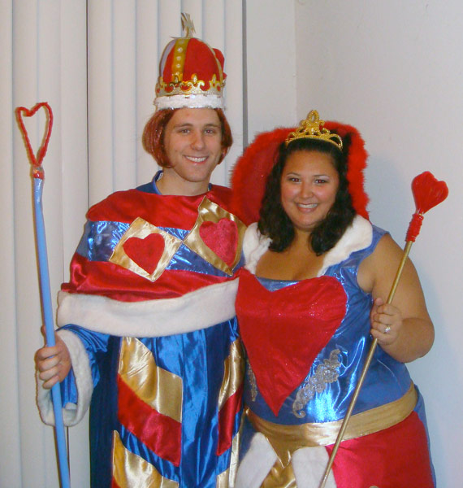
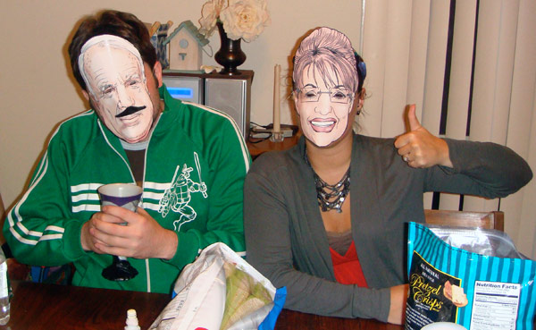
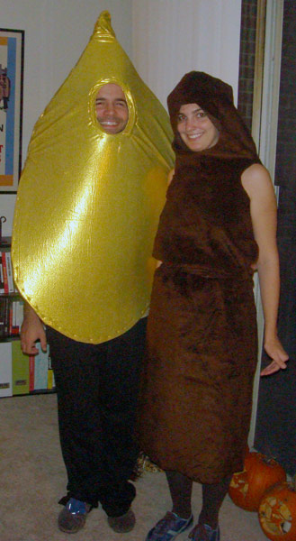
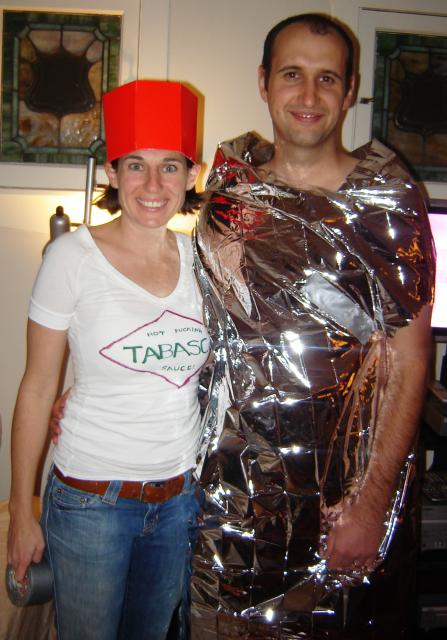
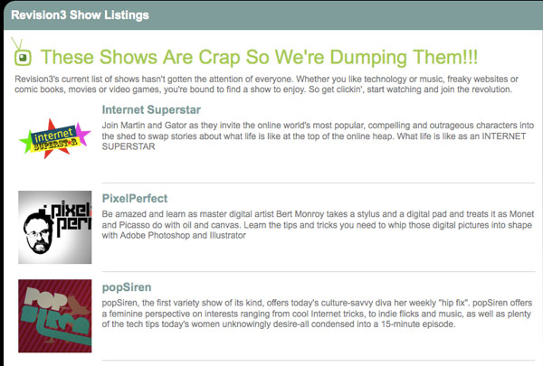
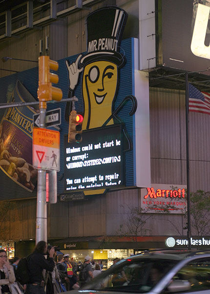
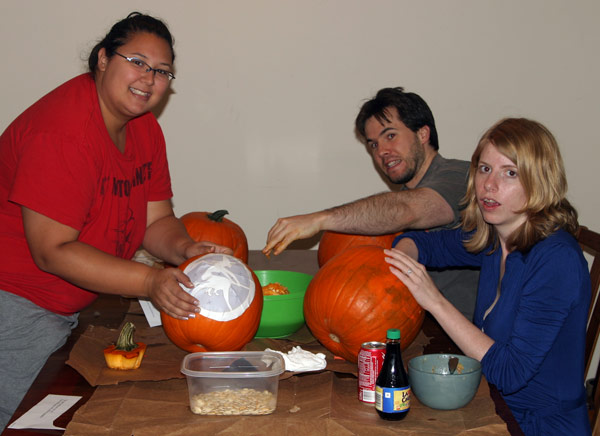
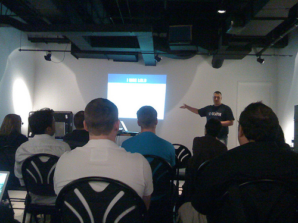
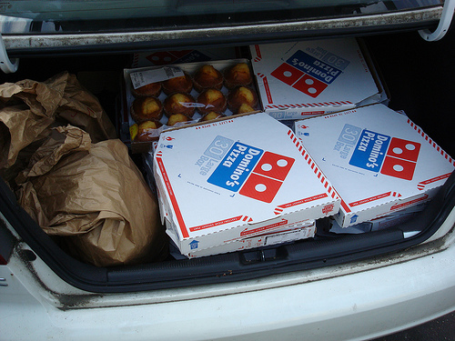

November 4th, 2008
The roomies and I decided to throw a Halloween bash this year after carving our pumpkins. As hosts of the shin dig we knew we had to have the most elaborate costumes. Kristina spent all week sewing our King and Queen of Hearts costumes out of old clothes and fabric from the thrift store. You can read more about how she brought everything together at RussellandKristina.com but the results speak for themselves.

Our roommates dressed up as a cop and a Mexican. Their costumes provided lots of laughs.
Our friend Pammy and Chris took the laid-back approach going as McCain and Palin via the Chicago Tribune campaign 2008 masks.

But by far the most interesting costume of the night went to Matt and Toni. At first we thought they were a yellow tear drop and a bear but later we realized they were pee and poop.

We didn’t get any trick-or-treaters but we still had a great time hanging out, eating lots of candy, and playing a rousing game of Apples to Apples .
.
Posted at 1:11 am in Local, Random Musings | 2 Comments »
November 3rd, 2008
Since it is November, Fall is in full swing. The leaves by the Glenmont metro station are starting to make the change from green to yellow.
Posted at 10:30 am in Mobile Post | 2 Comments »
October 30th, 2008
A little rumor has made it’s way around the interwebs that if you dress up like a burrito on Halloween then you will get one free. According to some other sites this rumor is indeed true but only after 5 or 6pm until closing. There doesn’t seem to be any kind of official promo from Chipotle so what constitutes a burrito costume is up for debate. Some think you need to wrap yourself up from head to toe while others say a simple aluminum foil hat will suffice. Whatever the case may be it is certainly worth the risk if it means a free burrito. Maybe you will even pick up a hot tabasco chick like this guy.

Posted at 8:51 pm in Random Musings | No Comments »
October 27th, 2008
Internet video may be in the midst of a boom, but the Tech-TV haven Revision3 canceled 3 (how ironic) shows and laid off several well-known production staff today. If you were a fan of the shows PixelPerfect, popSiren, or Internet Superstar you’ll be disappointed to hear the shows have been canned, or more appropriate for the Internet medium, 404’d. Apparently the shows don’t fit in the long-term plan for Revision3 (grow a large audience and make a gazillion dollars.)

Part of the staffers let go today are producers/talent Jay Speiden, Sarah Lane, and Martin Sargent, and Diggnation cameraman Glenn “Hippie” McElhose who is now freelancing for Revision3. Even though Glenn makes an appearance in nearly every episode, I figured Diggnation would be excluded from cuts due to the popularity/revenue of the show and the low cost of production. After all, how hard could it be to film two guys on a couch who frequently plug sponsors for 45 minutes every week?
I’m sad to hear that Martin is getting the boot. His show Web Drifter was a personal favorite of mine. Seeing the wacky, kooky individuals behind some of the strangest sites on the net always brought a smile to my face on my morning commute. They were supposed to start the series up this fall but it appears that won’t be happening anymore. I wonder what they will do with any unreleased episodes they’re sitting on. I’m interested to see what Martin and Jay will be doing next.
So while Internet video may be gaining large audiences, they sure aren’t getting enough advertisers to join them. Most of the ads I’ve seen on the shows I watch are for GoDaddy.com and Audible. I’m guessing the core audience for Revision3 shows is a techie crowd. If Revision3 wants to succeed they’ll need to move more into the mainstream and/or support shows that cost a lot less to make. They are starting to do this with their Revision3 Beta program which has many shows taking cue from the couch-centric Diggnation. Maybe they should adopt a donation model like NPR or the TWiT network. Leo Laporte seems to be doing ok for himself.
Posted at 11:30 pm in Internet, Media, Video | No Comments »
October 25th, 2008
Kristina and I managed to get here early for the showing of Religulous so I decided to take pictures with my cameraphone while flayling it around. This shot is of the carpet outside of theater 2.
Posted at 2:30 pm in Mobile Post | No Comments »
October 22nd, 2008
My trip to New York city two weekends ago was exciting. This was the first time I have visited the city and my first time seeing Times Square. The sheer number of blinking lights and large screens was slightly more puzzling than the throng of people who sought out these ads.
One ad that made me smile was the Mr. Peanut sign not because Mr. Peanut is warm and friendly but because it had a glaring Windows DOS screen on display:

This is what the sign is supposed to look like.
Overall New York city was nice to visit but way too expensive and crowded to ever consider living there.
Posted at 9:46 pm in Random Musings | 2 Comments »
October 21st, 2008

Tonight the roommates and I carved our pumpkins for Halloween. We put out cut up paper bags on the dining room table and proceeded to extract the orange, stringy pumpkin guts. We each picked our own design and sat in silence for about an hour as we patiently cut out the pieces. They all came out great.
My pumpkin featured a portrait of Oogie Boogie from The Nightmare Before Christmas. The template was made by Frank Jonen who made a 3D model to make sure it would work.
Need some help carving your own pumpkin this year? Check out these resources:
What does your pumpkin look like?
Posted at 11:20 pm in Local, Random Musings | 6 Comments »
October 20th, 2008
This past weekend the second DC area BarCamp took place. Like last year’s event, a horde of local techies came out to teach one another and collaborate on new ideas.
My favorite presentation was from Jeff Brown, a high school teacher who considers himself a webucator. His talk was about how he is teaching proper, standards-compliant web development techniques at Damascus High School in Montgomery County. Here’s a picture of the back of my head (I’m in the blue shirt) taken by kenyaoa during the session.

Another memorable event was an impromptu session about Expression Engine, a flexible CMS. I was so inspired from the small group that the next day I tried the free version out myself.
The Washington Post was there covering the event and there was a small write up in the business section this morning. They interviewed Charlie Park, a friend of mine I met at the first BarCamp, who started an online budgeting app. The reporter called the space where we were meeting a “Georgetown basement” but it was actually generously donated by the Center for Digital Imaging Arts, which is a part of Boston University.
When you get over a hundred developers together all day, they’re going to get hungry. Thankfully this Barcamp was loaded with food. A full breakfast was provided including an assortment of bagels, muffins, and coffee. Candy, nutrigrain bars, and granola bars were available for snacking on throughout the day. And for lunch, the organizers ordered 100 pizzas for everyone! I think that ended up to be half a pizza for every attendee. As you might guess there was some extra food leftover at the end of the day so the Barcamp organizers donated 40 pizzas, 60 bagels, and a heap of muffins to a local homeless shelter.

The after party took place at McFadden’s and since there was extra money left over in the budget we got to blow it on free drinks and food. Our waitress did a great job of keeping the group’s glasses and bellies full.
Overall it was another great DC tech event. A big thanks to all the people who helped organize the event and deal with the logistics. Another big thanks goes to all the sponsors who made BarCamp possible. Their donations went a long way so everyone could have a great time.
Other posts from around the interwebs:
Posted at 10:08 pm in Conference, Local | 1 Comment »
October 20th, 2008
I always thought this italian restaurant looked interesting. It looks like there was some major damage caused by a fire because the whole front porch has been demolished and there were smoke stains around the windows on the top floor. The fire crews had everything under control when I walked by but the section of 31st street between K and M was still blocked off. You can see what it looked like pre-fire at http://www.georgetowndc.com/view/ristorante-piccolo
Posted at 11:00 am in Mobile Post | 1 Comment »
October 14th, 2008
Apple announced a new 24″ Cinema Display today at their press event. Besides looking like a gutted iMac, the display shares a similar look to the HP w2007 20-inch widescreen monitor.
Posted at 3:17 pm in Gadgets, Random Musings | 2 Comments »